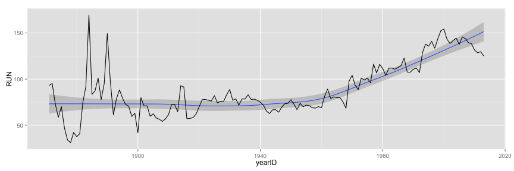
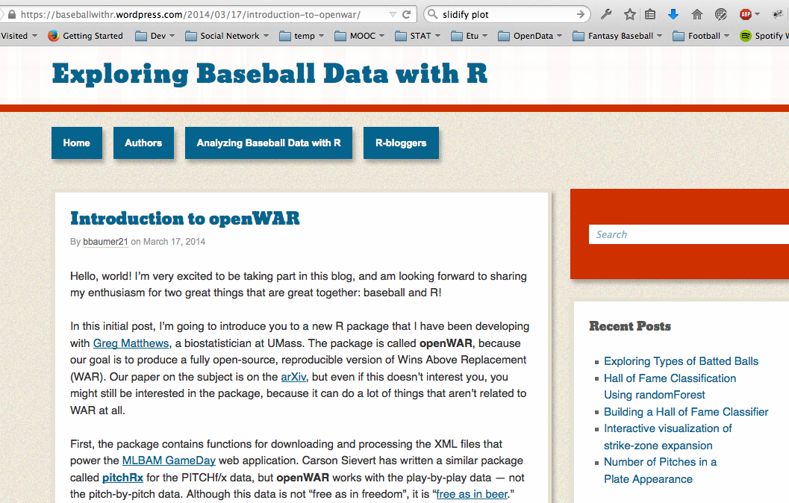

Play Data, Play Ball!
Exploring Baseball Data with R
Summit Suen
Taiwan R User Group
第一頁
說到運動資料的分析，你會想到...

我也是看報紙才知道（誤

我也是看報紙才知道（誤

Sabermatrics：賽伯計量學

前人寫扣，後人乘涼
library(Lahman)
library(dplyr)
totalRS <- Teams %>% select(yearID, R, G) %>% mutate(AvgRperG = R/G) %>% group_by(yearID) %>% summarise(sum(AvgRperG))
names(totalRS) <- c("yearID", "RUN")
head(totalRS)
## Source: local data frame [6 x 2]
##
## yearID RUN
## 1 1871 93.12897
## 2 1872 95.21474
## 3 1873 73.15998
## 4 1874 58.55903
## 5 1875 70.08774
## 6 1876 47.01267
前人寫扣，後人乘涼
library(ggplot2)
ggplot(data = totalRS, aes(x = yearID, y = RUN)) + stat_smooth() + geom_line()
## geom_smooth: method="auto" and size of largest group is <1000, so using loess. Use 'method = x' to change the smoothing method.

前人寫扣，後人乘涼
library(Lahman)
library(dplyr)
head(filter(Batting, playerID == "jeterde01"))
## playerID yearID stint teamID lgID G G_batting AB R H X2B X3B HR
## 1 jeterde01 1995 1 NYA AL 15 15 48 5 12 4 1 0
## 2 jeterde01 1996 1 NYA AL 157 157 582 104 183 25 6 10
## 3 jeterde01 1997 1 NYA AL 159 159 654 116 190 31 7 10
## 4 jeterde01 1998 1 NYA AL 149 149 626 127 203 25 8 19
## 5 jeterde01 1999 1 NYA AL 158 158 627 134 219 37 9 24
## 6 jeterde01 2000 1 NYA AL 148 148 593 119 201 31 4 15
## RBI SB CS BB SO IBB HBP SH SF GIDP G_old
## 1 7 0 0 3 11 0 0 0 0 0 15
## 2 78 14 7 48 102 1 9 6 9 13 157
## 3 70 23 12 74 125 0 10 8 2 14 159
## 4 84 30 6 57 119 1 5 3 3 13 149
## 5 102 19 8 91 116 5 12 3 6 12 158
## 6 73 22 4 68 99 4 12 3 3 14 148
前人寫扣，後人繼續乘涼
install.packages("pitchRx")
library(pitchRx)

前人寫扣，後人繼續乘涼
install.packages("Sxslt", repos = "http://www.omegahat.org/R", type = "source")
require(devtools)
install_github("openWAR", "beanumber")

前人寫扣，後人不能一直乘涼！
自己的國家自己救
自己的 crawler/analyzer 自己寫！
巧婦難為無米之炊：資料哪裡來？

第一次用Ｒ寫爬蟲就上手
## RSelenium + phantomJS
library(XML)
library(RSelenium)
pJS <- phantom()
Sys.sleep(5)
remDr <- remoteDriver(browserName = 'phantomjs')
remDr$open()
url <- 'http://www.cpbl.com.tw/stats_hr.aspx'
remDr$navigate(url)
hr_tables <- list()
第一次用Ｒ寫爬蟲就上手
year <- seq(1990, 2014)
for (i in 1:length(year)) {
option <- remDr$findElement(using = 'xpath', paste0("//*/option[@value = '",year[i],"']"))
option$clickElement()
src <- option$getPageSource()
hr_tables[i] <- readHTMLTable(src[[1]], stringAsFactors = FALSE, encoding = "utf8")
}
# View(hr_tables)
remDr$close()
pJS$stop()
資料在手，跟我走！
load("hr_tables.RData")
head(hr_tables[[25]])
## NUMBER YEAR GID DATE STADIUM BATTER BATTERTEAM PITCHER
## 1 # YEAR GAME NO. DATE STADIUM PLAYER PLAYER TEAM PITCHER
## 2 1 2014 2 2014/3/23 天母 林 威 助 中信兄弟 費 古 洛
## 3 2 2014 3 2014/3/23 澄清湖 詹 智 堯 Lamigo 林 正 豐
## 4 3 2014 4 2014/3/25 新莊 張 志 豪 中信兄弟 林 晨 樺
## 5 4 2014 5 2014/3/26 嘉義市 林 泓 育 Lamigo 林 岳 平
## 6 5 2014 6 2014/3/27 新莊 張 志 豪 中信兄弟 黃 勝 雄
## PITCHERTEAM RBI REMARK
## 1 PITCHER TEAM RBI REMARK
## 2 統一7-ELEVEn 1
## 3 義大 1
## 4 義大 1
## 5 統一7-ELEVEn 1
## 6 義大 1
用Ｒ畫圖跟你想的不一樣
par(family = 'Heiti TC Light')
m <- ggplot(hr_table, aes(x = as.numeric(GID)))
m + geom_density(aes(fill = factor(BatterTeam), alpha = 0.01)) +
labs(title = paste0("HR Distribution of ", year[i]," Season 中華職棒", year[i], "賽季逐場全壘打分布")) +
theme(text = element_text(family="Heiti TC Light"), plot.title = element_text(size = 26), legend.text = element_text(size = 20))
## Error in paste0("HR Distribution of ", year[i], " Season 中華職棒", : object 'year' not found
資料在手，繼續走！
load("sc_tables.RData")
# 賽伯計量學的畢達哥拉斯定理
win_pc <- function(RS, RA) {
perc <- RS^2 / (RS^2 + RA^2)
return(perc)
}

用Ｒ畫圖跟你想的不一樣趴兔
levels(win_prob$team)
## [1] "統一7-ELEVEn" "義大" "中信兄弟" "Lamigo"
# fig <- ggplot(data = win_prob, aes(x = team, y = real, fill = factor(half)))
# fig + geom_bar(stat = "identity", position="dodge")
ggplot(data = win_prob, aes(x = expd, y = real, color = factor(team))) + stat_smooth() + geom_point() + coord_fixed()
## geom_smooth: method="auto" and size of largest group is <1000, so using loess. Use 'method = x' to change the smoothing method.

（並沒有）令十三億人都震驚的事實

想要玩更多分析嗎？來吧，我把資料都放在這裡了，讓我們一起迎接大數據時代！！！